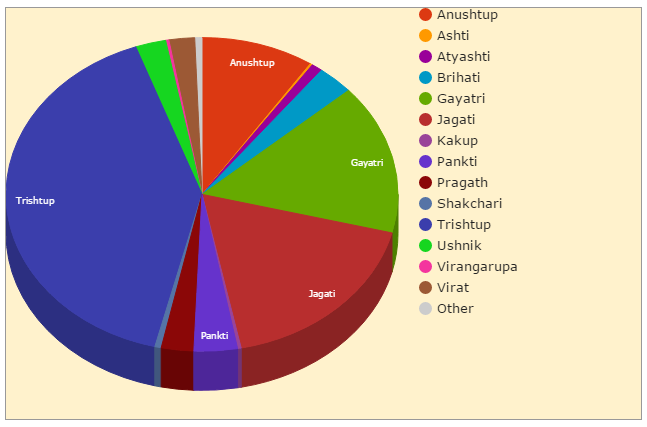
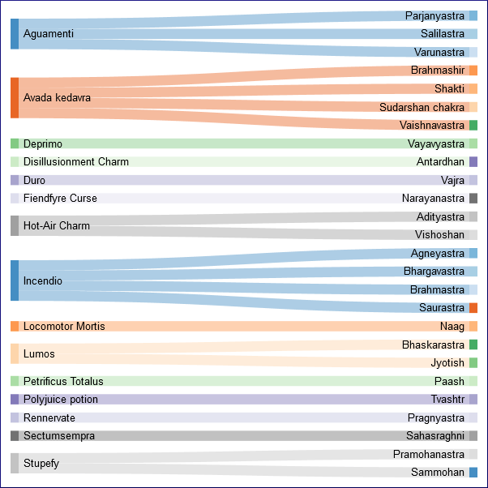

Visualisations
Storifying data. With minimal coding.
Titanic deaths
How many people died that night? Which social class did they belong to? Did more women survive than men?

Data was in a .xls file. The spreadsheet's inbuilt functions were used for aggregating the numbers and drawing the graph.
Earthquakes
When did the first recorded earthquake occur? Where? Which one was the deadliest? Where do most earthquakes happen? Are there earthquakes in the Arctic Circle?

Data was in a tab-delimited text file, which was converted to a .xls with a Python script (tab2csv.py). The spreadsheet's inbuilt functions were then used for aggregating the numbers and drawing the graph.
Twitter chatter
What are the people on my timeline talking about?

Data was in the form of JSON objects that the Twitter API sends back when you track a user, hashtag, or keywords. The tweet text was extracted from the JSON object, cleaned up for punctutations and irrelevant words, and then used to generate the word cloud. Code is in tweet_cloud.py.
Invaders of India
Who all invaded India back then? Which places did they conquer? How far into India did they penetrate?
This map is interactive. You can toggle the visible layers (see dropdown at top left) and zoom in or out (see buttons at top right). To see details about a plot point, move the cursor over that point.
Data is in history books. Created a CSV file of dates and place names, used a Python script (geo_lookup.py) to add the latitude and longitude values to these places, and then used the updated CSV file as an input on CartoDB.com to create a layered bubble map.
The Rig Veda
...Data is in books. Created a CSV file...
Whom did the poets sing the most to?

Which rhythm did the poets favour the most?

---
Are there any pronounced affiliations between poets and the gods that they sing of? Who among the poets sang the most songs?
---
The Mahabharat
Where all did Arjun wander during his several journeys?
Data is in books. Created a CSV file of place names, used my Python script (geo_lookup.py) to add the latitude and longitude values to these places, and then used the updated CSV file as an input on CartoDB.com to create a torque map.
How were the various clans linked through marriages?
...still a work-in-progress...Data is in books. Created a CSV file and used it for a d3.js sankey diagram...shows only some of the clans
 .
.
Who was the most heavily armed?
 .
.
How do these Mahabharat weapons compare with the Harry Potter charms and spells?

References
- Titanic data: Vanderbilt University's Department of Biostatistics's data set
- Earthquake data: National Geophysical Data Center
Visualisations is maintained by AninditaBasu.